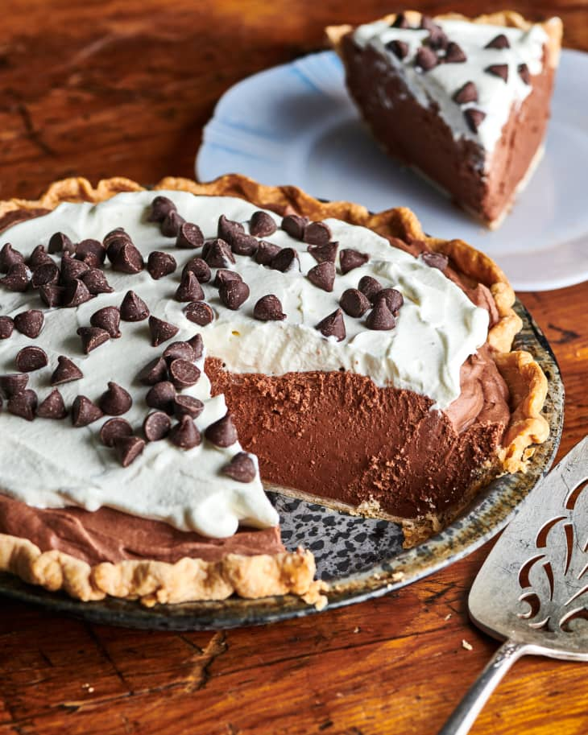

Description
A classic dessert featuring a rich, creamy chocolate filling baked in a flaky crust. Often topped with whipped
cream, fruit, or chocolate shavings
Ingredients
- 1 1/2 cups all-purpose flour
- 1/2 teaspoon salt
- 1/2 cup unsalted butter, cold and cubed
- 3-4 tablespoons ice water
- 1 cup semisweet chocolate chips
- 1/2 cup heavy cream
- 3 large eggs
- 1/2 cup granulated sugar
- 1/4 cup brown sugar
- 1/4 teaspoon salt
- 1 teaspoon vanilla extract
- Toppings like Whipped cream,Chocolate shavings ,Fresh berries or Maraschino cherries
Steps
- Preheat your oven to 375°F (190°C).
- In a large bowl, whisk together the flour and salt.
- using a pastry cutter or your fingers, cut the cold butter into the flour until it resembles coarse crumbs.
- Gradually add ice water, one tablespoon at a time, until the dough comes together. Avoid overmixing.
- Form the dough into a disc, wrap it in plastic wrap, and refrigerate for at least 30 minutes.
- In a microwave-safe bowl, melt the chocolate chips with the heavy cream in 30-second intervals, stirring in
between, until smooth and glossy. Set aside.
- In a separate bowl, whisk together the eggs, sugars, and salt until light and fluffy.
- Whisk in the vanilla extract and melted chocolate mixture until fully combined.
- On a lightly floured surface, roll out the chilled dough to a 12-inch circle. Transfer it to a 9-inch pie
plate, pressing it gently into the bottom and sides.
- Pour the chocolate filling into the prepared crust.
- Bake for 20-25 minutes, or until the crust is golden brown and the filling is set around the edges but still
slightly jiggly in the center.
- Let the pie cool completely on a wire rack for at least 2 hours, or refrigerate overnight, before serving.
return to top
return to main